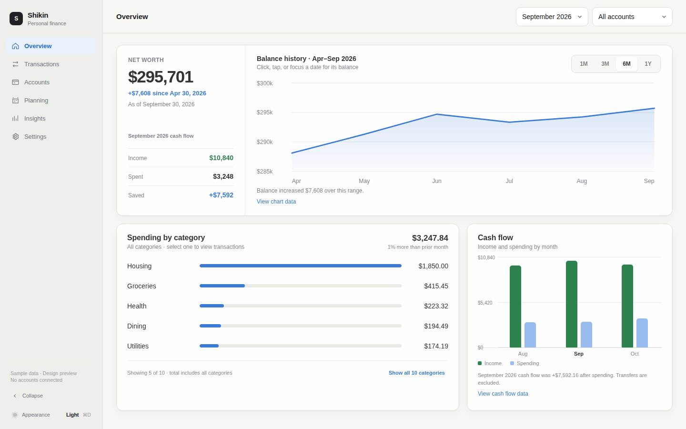
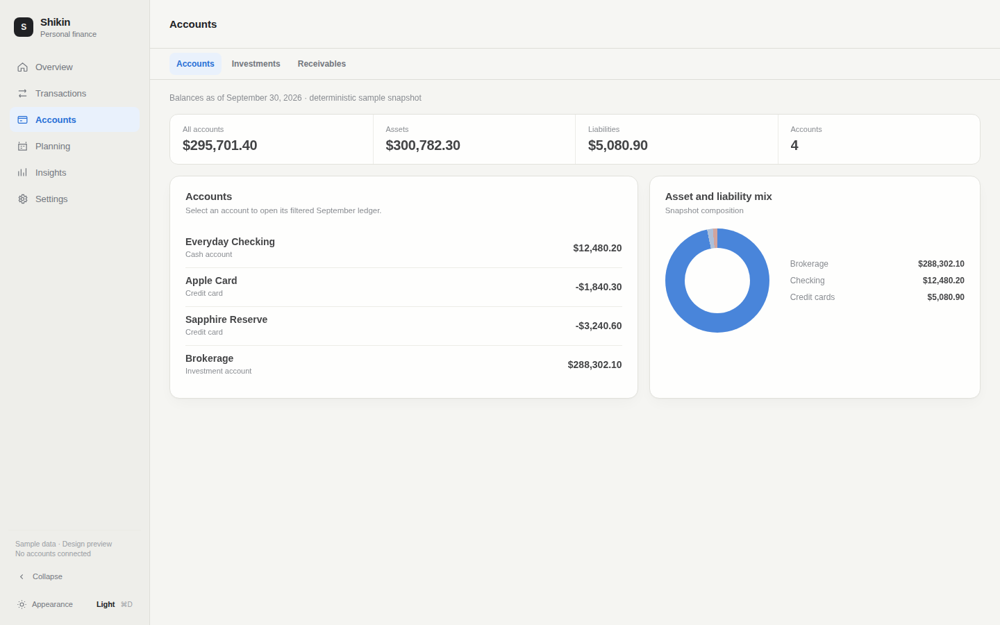
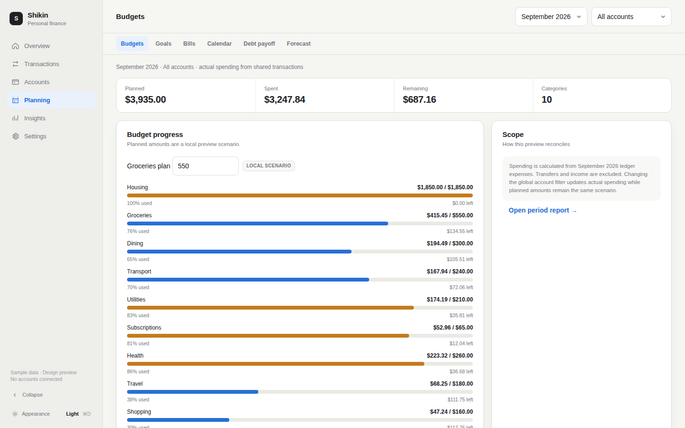
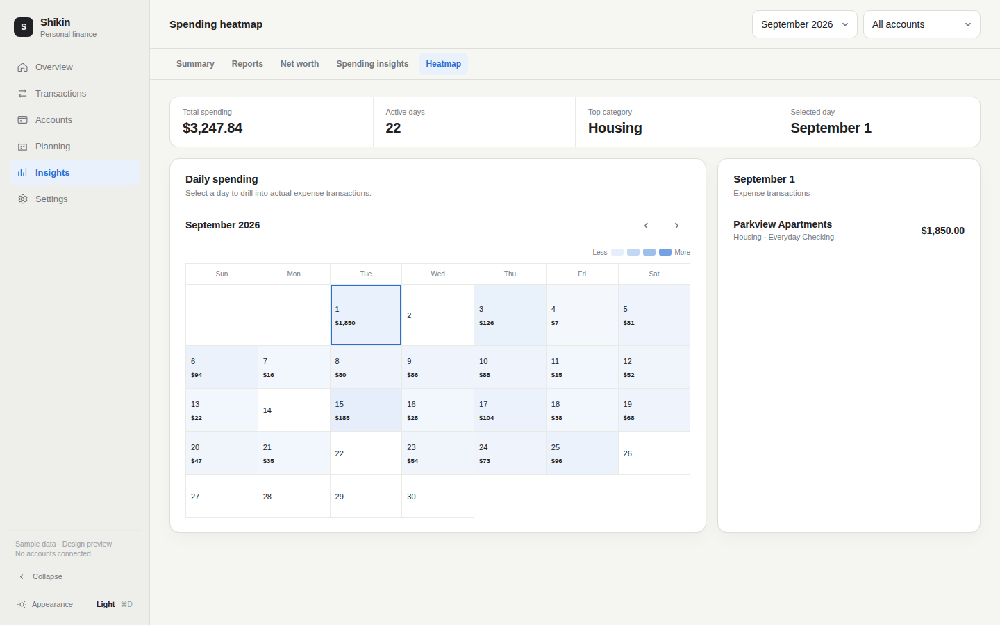
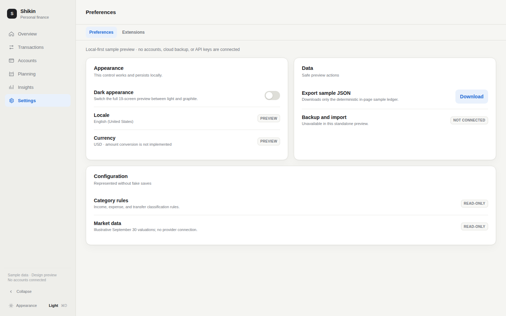
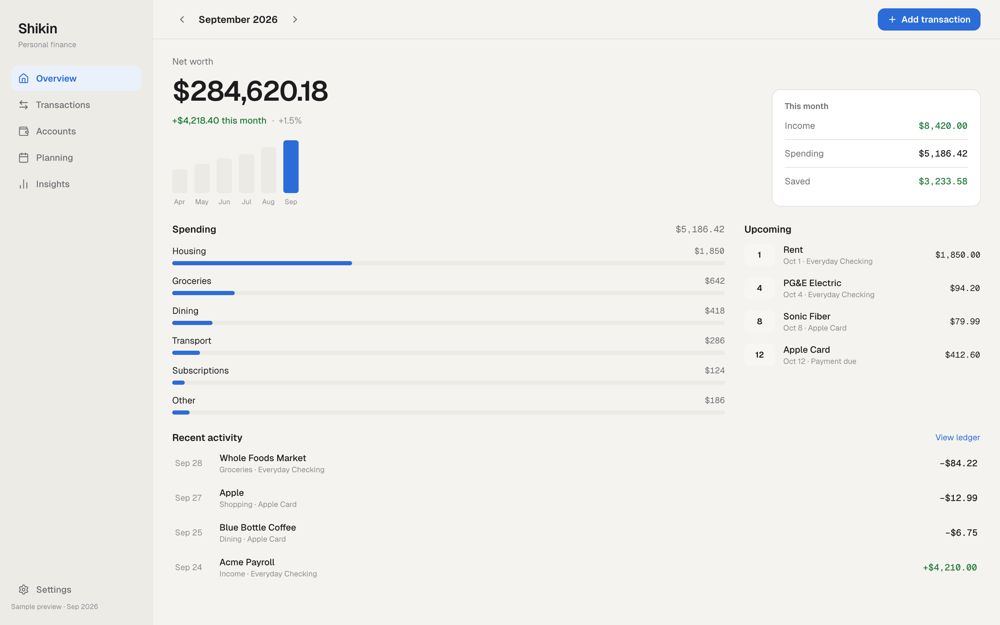
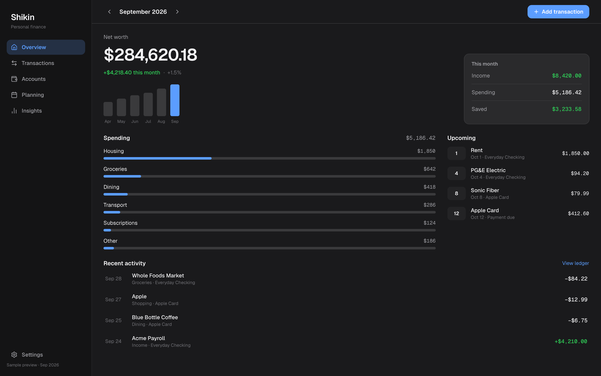
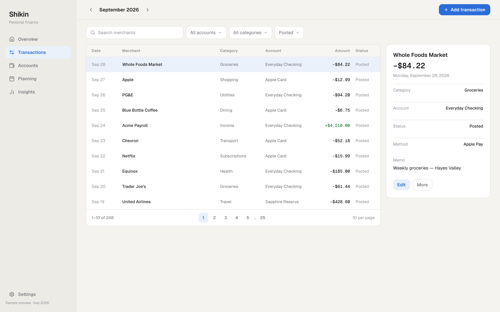
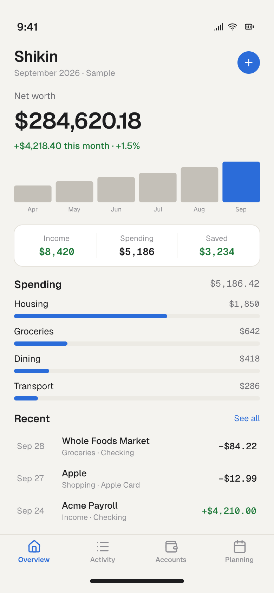

Shikin
Calm native finance workspace — interactive iteration and initial static concept.
All values are deterministic sample data. Nothing connects to a real account.
Interactive prototype · 19 routed screens · light and dark · responsive

Routes: Overview · Transactions / Categories · Accounts / Investments / Receivables · Budgets / Goals / Bills / Calendar / Debt payoff / Forecast · Insights / Reports / Net worth / Spending insights / Heatmap · Preferences / Extensions
Representative interactive screens




Initial static sketch · Overview · Light · 1440×900

Initial static sketch · Overview · Dark · 1440×900

Initial static sketch · Transactions · Light · 1440×900

Initial static sketch · Overview · Mobile · 390×844
